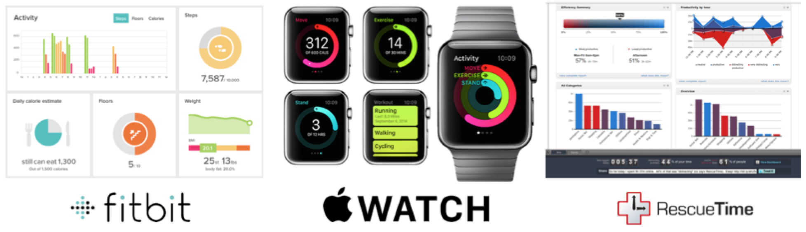

4 Aspects of Intelligence for Designing a Conversational Agent in Behavior Change
Posted on April 1, 2018 by Rafal Kocielnik
OK, so you want to make a chatbot that can help people make sense of all the fancy metrics from Fitbit, Apple Watch, Strava or whatever fitness tracker. What design aspects are most important? How to engage people to explore their data?
Tracking ones activities does not always contribute to improvements in fitness. As it turns out, just tracking is not enought in many cases. To make use of it you need to reflect on your data and learn from what you track. Unfortunately your app just gives you a graph and expects you to figure things out for yourself.
“prior work carries an implicit assumption that [just] by providing access to data that has been ‘prepared, combined, and transformed’ for the purpose of reflection, reflection will occur.”
Luckily a conversational agent could help guide and engage people with their data. If designed well such an agent can serve as private mini-counselor mimicking what professional coaches do in real life. But what capabilities does a conversational agent need to have to support such coaching?
First let's explore what aspects need to be supported in learning for behavior change:
- Long-term - Learning, especially in behavior change requires long-term observations and experiments.
- Engagement - Keeping user engaged in learning requires novel and diverse contents.
- Guidance - Guidance is needed to focus learning, provide structure to free exploration, and trigger novel insights.
- Freedom - Aspects to be learned are not known in advance, user must be given freedom to explore and express herself.
- Diving deeper - Self-learning in behavior change requires going beyond initial responses to dive deeper into true motivations.
Conversational Agent can serve as a virtual counselor, but it needs to be "intelligent"! At least intelligent enough :) Intelligence is a complex problem, but for the purpose of design we can try to decompose it into a number of important design considerations:
 Adaptation - Conversation needs to adapt over time to account for user progress, changing motivations end evolving understanding. Especially in behavior change user progress needs to be acknowledged and built upon.
Adaptation - Conversation needs to adapt over time to account for user progress, changing motivations end evolving understanding. Especially in behavior change user progress needs to be acknowledged and built upon.- Memory - Aspects already discussed in past conversations need to be remembered to allow for exploration of new topics and to avoid repetitions. You don't want to share with a bot that can't remember!
Knowledge - Agent needs to possess expert knowledge in the application domain as well as knowledge about the user and context to offer valuable guidance.
 Comprehension - Agent needs to understand user replies and react accordingly to show interest/understanding and help encourage deeper thinking and sharing of information.
Comprehension - Agent needs to understand user replies and react accordingly to show interest/understanding and help encourage deeper thinking and sharing of information.